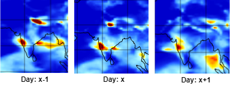
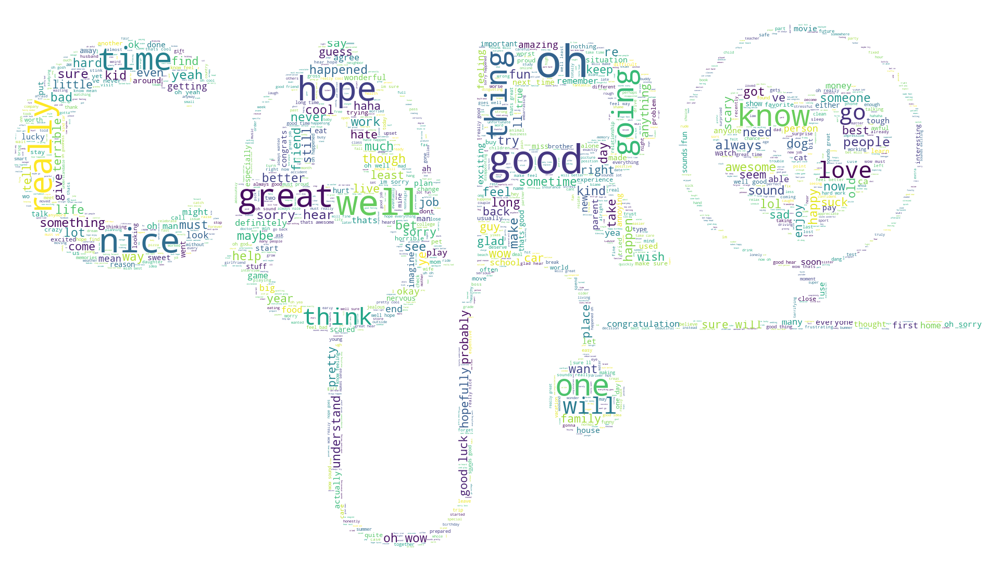
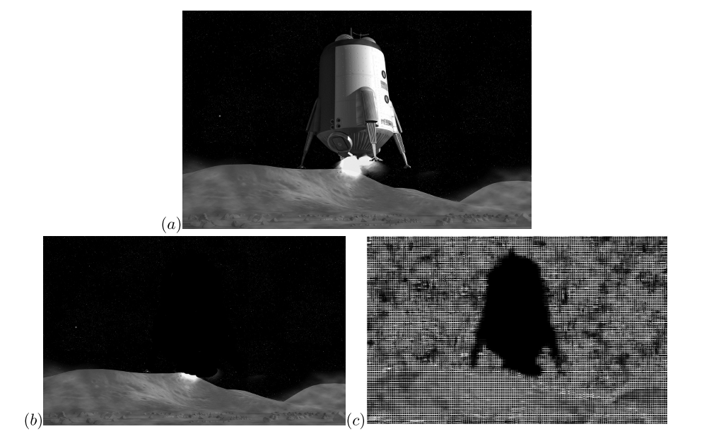
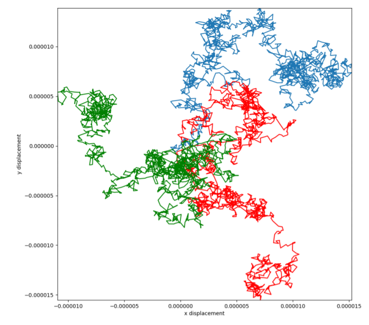
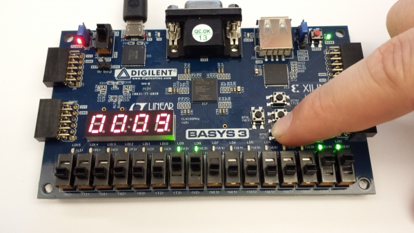
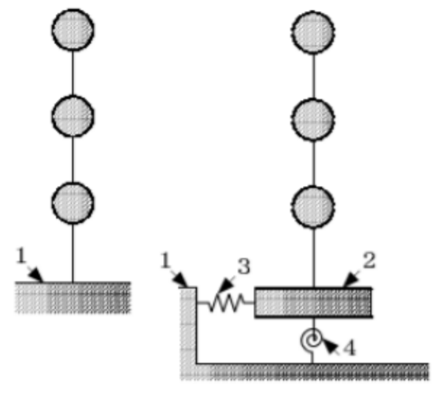

Research/ Academic Projects
-
July 2019 - Dec 2019
Generation of High Resolution Climate Change Projections with Recurrent based Convolutional LSTMs
Research Guide: Prof. Udit Bhatia
Earth System Models (ESM) runs at spatial resolutions which are too coarse for assessing the effects of localized climate variables. However, Statistical downscaling is a technique which uses historical climate observations to learn a low-resolution to high-resolution mapping. The spatiotemporal nature of the climate system motivates the adaptation of deep learning approaches towards statistical downscaling. My research aims to develop a Recurrent Convolutional LSTM based neural network architecture for generating high-resolution climatic projections.
[Report] [Github] -
Aug - Nov 2019
CARO: An Empathetic Health Conversational Chatbot for People with Major Depression
Course Project: CS613: Natural Language Processing
Publication: In Proceedings of the 7th ACM IKDD CoDS and 25th COMAD
There has been a rise in the number of patients suffering from major depression over the past decade, proliferating mainly in teenagers. Although there are several counseling services available, most ofthe patients are reluctant and do not open up for it. However, Chatbots can play a very vital in such cases. The proposed chatbot (CARO) is based on a parallel LSTM based architecture with an ebmedded emotions classifier which is trained to both generate Empathetic responses as well as Medical advise.
[Project Report] [Project Poster] [Github] [Bibtex] -
Aug - Nov 2019
Passive detection of doctored image via JPEG BAG Extraction
Course Project: EE 605: Digital Image Processing
The block artifact grids (BAG), caused due to the blocking processing of Image JPEG compression, are mismatched when interpolating or concealing the objects in an image. In this project, with the help of a BAG extraction algorithm, BAGs are extracted then abnormal BAGs are detected with a marking procedure. The phenomenon of Grid mismatch or Grid blank can be taken as a trail for Image forensics.
[Report] -
Aug - Nov 2019
XV6 File System Checker
Course Project: CS 301: Operating Systems

Implemented a File-system checker for the Xv6 open source operating system developed by MIT. Xv6 comes with a predefined file-system, which is similar to the Linux file system. The Checker reads in the file system image built by the Xv6 and makes sure that its consistent across a number of things.
[Github] -
Oct - Nov 2018
Simulating Brownian motion from unpredictability in quantum realm
Course Project: PH102 Physics Lab
Used the phenomenon of Quantum Tunnelling and designed a emitter reverse biased transistor circuitfor generating random output. Unbiased the output by using Von Neumann decor-relation. Verified the randomness of output using byte-wise arithmetic mean, chi squared test and Monte Carlo pi test. Simulated a Wiener process using the random bits generated as displacement.
[Report] [Poster] -
Oct - Nov 2018
Two Tier Morse Code Encoder-Decoder using FPGA
Course Project: ES203 Digital Systems
Designed a two tier real time encryption-decryption transmitter and receiver machine which takes in a dynamic input in the form of a Morse code and further encodes the message using the Base64 encryption algorithm.
[Poster] -
April - May 2018
Maths behind Earthquakes
Course Project: Linear Algebra & Differential Equations
Studied regression based mathematical models which quantified direct damages from earthquakes to properties given the magnitude, intensity, depth of focus, location of epicentre and time duration.
[Slides]
Other Projects
-
A Scalable webapp for face recognition with single image of a User
Summer Project: Capgemini Technology Services Pvt. Ltd.
Analyzed Facenet neural network architecture for Face Recognition from video frames of a scene using a stored database of faces with the constraint of ‘one sample per person'. Developed a scalable web-app Dashboard based on nodejs and flask which was integrated with Face detection model. The developed dashboard included feautures such as live face update for unrecognized faces, synchronous training of the model, recognition with cloud update. Firebase was used as a cloud database.
-
Dec 2018
Personal Assistant(Chatbot)
Coding Hackathon Inter IIT Tech Meet 2018, IIT Bombay
Developed a Personal Assistant Chatbot which will notify people to take medicines on time based on doctors prescription along with the feature of custom notifications. Additionally, Integrated features such as Live railway PNR status and railway availability.
-
Nov - May 2018
POHAR- Post Cyclone Aiding System
Coding Hackathon Team Screening IIT Gandhinagar
Developed a Post Cyclone Aiding System which helps to identify safe areas/routes and hospitals in flood/cyclone hit areas along with availability of resources. Integrated a feedback system for obtaininf status about various affected regions.